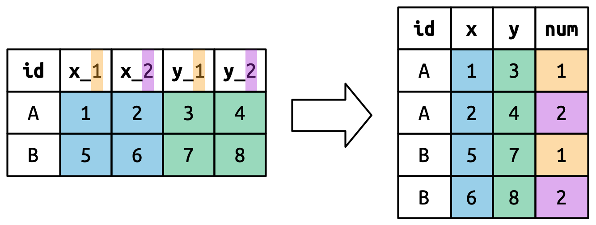

5 Τακτοποίηση δεδομένων
5.1 Εισαγωγή
“Όλες οι ευτυχισμένες οικογένειες μοιάζουν. Κάθε δυστυχισμένη οικογένεια είναι δυστυχισμένη με το δικό της τρόπο.”
— Leo Tolstoy
“Όλα τα τακτοποιημένα σύνολα δεδομένων μοιάζουν, αλλά κάθε ακατάστατο σύνολο δεδομένων είναι ακατάστατο με το δικό του τρόπο.”
— Hadley Wickham
Σε αυτό το κεφάλαιο, θα μάθετε έναν συνεπή τρόπο οργάνωσης των δεδομένων σας στην R χρησιμοποιώντας ένα σύστημα που ονομάζεται τακτοποιημένα δεδομένα (tidy data). Η μετατροπή των δεδομένων σας σε αυτήν τη μορφή απαιτεί εκ των προτέρων λίγη δουλειά , η οποία όμως αποδίδει μακροπρόθεσμα. Μόλις έχετε τακτοποιημένα δεδομένα και τα τακτοποιημένα εργαλεία που παρέχονται από τα πακέτα του tidyverse, θα ξοδεύετε πολύ λιγότερο χρόνο για να μετατρέπετε δεδομένα από τη μία αναπαράσταση στην άλλη, επιτρέποντάς σας να αφιερώνετε περισσότερο χρόνο στην απάντηση των ερωτημάτων που σας ενδιαφέρουν.
Σε αυτό το κεφάλαιο, θα μάθετε πρώτα τον ορισμό των τακτοποιημένων δεδομένων και θα δείτε την εφαρμογή τους σε ένα απλό σύνολο δεδομένων. Στη συνέχεια, θα εξετάσουμε το κύριο εργαλείο που θα χρησιμοποιήσετε για την τακτοποίηση των δεδομένων: την περιστροφή (pivoting). Η περιστροφή σας επιτρέπει να αλλάξετε τη μορφή των δεδομένων σας χωρίς να αλλάξετε καμία από τις τιμές του.
5.1.1 Προαπαιτούμενα
Σε αυτό το κεφάλαιο, θα επικεντρωθούμε στο tidyr, ένα πακέτο που παρέχει μία δέσμη εργαλείων που θα σας βοηθήσουν να τακτοποιήσετε τα ακατάστατα σύνολα δεδομένων σας. Το tidyr είναι μέλος του tidyverse.
Από αυτό το κεφάλαιο και μετά, θα καταστείλουμε το μήνυμα φόρτωσης από την εντολή library(tidyverse).
5.2 Τακτοποιημένα δεδομένα
Τα ίδια δεδομένα μπορούν να αναπαρασταθούν με πολλούς τρόπους. Το παρακάτω παράδειγμα δείχνει τα ίδια δεδομένα οργανωμένα με τρεις διαφορετικούς τρόπους. Κάθε σύνολο δεδομένων εμφανίζει τις ίδιες τιμές τεσσάρων μεταβλητών: country, year, population και αριθμός καταγεγραμμένων παρατηρήσεων φυματίωσης (TB, tuberculosis), αλλά κάθε σύνολο δεδομένων οργανώνει τις αντίστοιχες τιμές του με διαφορετικό τρόπο.
table1
#> # A tibble: 6 × 4
#> country year cases population
#> <chr> <dbl> <dbl> <dbl>
#> 1 Afghanistan 1999 745 19987071
#> 2 Afghanistan 2000 2666 20595360
#> 3 Brazil 1999 37737 172006362
#> 4 Brazil 2000 80488 174504898
#> 5 China 1999 212258 1272915272
#> 6 China 2000 213766 1280428583
table2
#> # A tibble: 12 × 4
#> country year type count
#> <chr> <dbl> <chr> <dbl>
#> 1 Afghanistan 1999 cases 745
#> 2 Afghanistan 1999 population 19987071
#> 3 Afghanistan 2000 cases 2666
#> 4 Afghanistan 2000 population 20595360
#> 5 Brazil 1999 cases 37737
#> 6 Brazil 1999 population 172006362
#> # ℹ 6 more rows
table3
#> # A tibble: 6 × 3
#> country year rate
#> <chr> <dbl> <chr>
#> 1 Afghanistan 1999 745/19987071
#> 2 Afghanistan 2000 2666/20595360
#> 3 Brazil 1999 37737/172006362
#> 4 Brazil 2000 80488/174504898
#> 5 China 1999 212258/1272915272
#> 6 China 2000 213766/1280428583Όλα αυτά είναι αναπαραστάσεις των ίδιων υποκείμενων δεδομένων, αλλά δεν είναι εξίσου εύχρηστα. Ένα από αυτά, το table1, θα είναι πολύ πιο εύκολο να το δουλέψετε μέσα στο tidyverse επειδή είναι τακτοποιημένο (tidy).
Υπάρχουν τρεις αλληλένδετοι κανόνες που κάνουν ένα σύνολο δεδομένων τακτοποιημένο:
- Κάθε μεταβλητή είναι μία στήλη. Κάθε στήλη είναι μία μεταβλητή.
- Κάθε παρατήρηση είναι μία γραμμή. Κάθε γραμμή είναι μία παρατήρηση.
- Κάθε τιμή είναι ένα κελί. Κάθε κελί είναι μία ενιαία τιμή.
Το Σχήμα 5.1 δείχνει τους κανόνες οπτικά.

Γιατί να βεβαιωθείτε ότι τα δεδομένα σας είναι τακτοποιημένα; Υπάρχουν δύο βασικά πλεονεκτήματα:
Υπάρχει ένα γενικό πλεονέκτημα στην επιλογή ενός συνεπούς τρόπου αποθήκευσης δεδομένων. Εάν έχετε μία συνεπή δομή δεδομένων, είναι πιο εύκολο να μάθετε τα εργαλεία που λειτουργούν με αυτήν, επειδή έχουν μία υποκείμενη ομοιομορφία.
Υπάρχει ένα συγκεκριμένο πλεονέκτημα στην τοποθέτηση μεταβλητών σε στήλες επειδή επιτρέπει στη διανυσματική φύση της R να φανεί στο προσκήνιο. Όπως μάθατε στην Ενότητα 3.3.1 και στην Ενότητα 3.5.2, οι περισσότερες ενσωματωμένες συναρτήσεις της R λειτουργούν με διανύσματα τιμών. Αυτό κάνει τον μετασχηματισμό τακτοποιημένων δεδομένων να φαίνεται ιδιαίτερα φυσικός.
Οι dplyr, ggplot2 και όλα τα άλλα πακέτα του tidyverse έχουν σχεδιαστεί για να λειτουργούν με τακτοποιημένα δεδομένα. Ακολουθούν μερικά μικρά παραδείγματα που δείχνουν πώς μπορείτε να εργαστείτε με τον table1.
# Υπολογίστε τον ρυθμό (rate) ανά 10.000
table1 |>
mutate(rate = cases / population * 10000)
#> # A tibble: 6 × 5
#> country year cases population rate
#> <chr> <dbl> <dbl> <dbl> <dbl>
#> 1 Afghanistan 1999 745 19987071 0.373
#> 2 Afghanistan 2000 2666 20595360 1.29
#> 3 Brazil 1999 37737 172006362 2.19
#> 4 Brazil 2000 80488 174504898 4.61
#> 5 China 1999 212258 1272915272 1.67
#> 6 China 2000 213766 1280428583 1.67
# Υπολογίστε τις συνολικές περιπτώσεις (cases) ανά χρόνο
table1 |>
group_by(year) |>
summarize(total_cases = sum(cases))
#> # A tibble: 2 × 2
#> year total_cases
#> <dbl> <dbl>
#> 1 1999 250740
#> 2 2000 296920
# Οπτικοποιήστε τις αλλαγές ανά χρονική περίοδο
ggplot(table1, aes(x = year, y = cases)) +
geom_line(aes(group = country), color = "grey50") +
geom_point(aes(color = country, shape = country)) +
scale_x_continuous(breaks = c(1999, 2000)) # x-axis breaks at 1999 and 2000![Αυτό το σχήμα δείχνει τον αριθμό των κρουσμάτων το 1999 και το 2000 για το Αφγανιστάν, τη Βραζιλία και την Κίνα, με το έτος στον άξονα των x και τον αριθμό των κρουσμάτων στον άξονα των y. Κάθε σημείο στο διάγραμμα αντιπροσωπεύει τον αριθμό των περιπτώσεων σε μια δεδομένη χώρα σε ένα δεδομένο έτος. Τα σημεία για κάθε χώρα διαφοροποιούνται από άλλες ως προς το χρώμα και το σχήμα και συνδέονται με μια γραμμή, με αποτέλεσμα τρεις, μη παράλληλες, μη τεμνόμενες γραμμές. Ο αριθμός των κρουσμάτων στην Κίνα είναι υψηλότερος τόσο για το 1999 όσο και για το 2000, με τιμές άνω των 200.000 και για τα δύο έτη. Ο αριθμός των κρουσμάτων στη Βραζιλία είναι περίπου 40.000 το 1999 και περίπου 75.000 το 2000. Ο αριθμός των κρουσμάτων στο Αφγανιστάν είναι ο χαμηλότερος τόσο για το 1999 όσο και για το 2000, με τιμές που φαίνεται να είναι πολύ κοντά στο 0 σε αυτήν την κλίμακα.](data-tidy_files/figure-html/unnamed-chunk-5-1.png)
5.2.1 Ασκήσεις
Για καθέναν από τους πίνακες δεδομένων που χρησιμεύουν σαν δείγματα, περιγράψτε τι αντιπροσωπεύει κάθε παρατήρηση και κάθε στήλη.
-
Σχεδιάστε τη διαδικασία που θα χρησιμοποιούσατε για να υπολογίσετε το
rateγια τονtable2και τονtable3. Θα χρειαστεί να εκτελέσετε τέσσερις λειτουργίες:- Να εξάγετε τον αριθμό των περιπτώσεων φυματίωσης ανά χώρα ανά έτος.
- Να εξάγετε τον αντίστοιχο πληθυσμό ανά χώρα ανά έτος.
- Να διαιρέστε τις περιπτώσεις ανά πληθυσμό και πολλαπλασιάστε με το 10000.
- Να αποθηκεύστε ξανά το αποτέλεσμα στο κατάλληλο μέρος.
Δεν έχετε μάθει ακόμη όλες τις συναρτήσεις που χρειάζεστε για να εκτελέσετε πραγματικά αυτές τις λειτουργίες, αλλά θα πρέπει όμως να είστε σε θέση να σκεφτείτε τους μετασχηματισμούς που θα χρειαστείτε.
5.3 Επιμήκυνση δεδομένων
Οι αρχές των τακτοποιημένων δεδομένων μπορεί να φαίνονται τόσο προφανείς που αναρωτιέστε αν θα συναντήσετε ποτέ ένα σύνολο δεδομένων που δεν είναι τακτοποιημένο. Δυστυχώς, ωστόσο, τα περισσότερα πραγματικά δεδομένα είναι ακατάστατα. Υπάρχουν δύο βασικοί λόγοι:
Τα δεδομένα συχνά οργανώνονται για να διευκολύνουν κάποιον άλλο στόχο εκτός από την ανάλυση. Για παράδειγμα, είναι σύνηθες τα δεδομένα να είναι δομημένα ώστε να διευκολύνουν την εισαγωγή δεδομένων και όχι την ανάλυση.
Οι περισσότεροι άνθρωποι δεν είναι εξοικειωμένοι με τις αρχές των τακτοποιημένων δεδομένων και είναι δύσκολο να τις εξάγετε μόνοι σας, εκτός εάν αφιερώσετε πολύ χρόνο να εργάζεστε με δεδομένα.
Αυτό σημαίνει ότι οι περισσότερες πραγματικές αναλύσεις θα απαιτήσουν τουλάχιστον λίγη τακτοποίηση. Θα ξεκινήσετε ανακαλύπτοντας ποιες είναι οι υποκείμενες μεταβλητές και οι παρατηρήσεις. Μερικές φορές αυτό είναι εύκολο. άλλες φορές θα χρειαστεί να συμβουλευτείτε τα άτομα που δημιούργησαν αρχικά τα δεδομένα. Στη συνέχεια, θα περιστρέψετε (pivot) τα δεδομένα σας σε μία τακτοποιημένη μορφή, με μεταβλητές στις στήλες και παρατηρήσεις στις γραμμές.
Το tidyr παρέχει δύο συναρτήσεις για την περιστροφή δεδομένων: τις pivot_longer() και pivot_wider(). Αρχικά θα ξεκινήσουμε με την pivot_longer() επειδή είναι η πιο συνηθισμένη περίπτωση. Ας δούμε μερικά παραδείγματα.
5.3.1 Δεδομένα σε ονόματα στηλών
Το σύνολο δεδομένων billboard καταγράφει την κατάταξη των τραγουδιών στον πίνακα διαφημίσεων το έτος 2000:
billboard
#> # A tibble: 317 × 79
#> artist track date.entered wk1 wk2 wk3 wk4 wk5
#> <chr> <chr> <date> <dbl> <dbl> <dbl> <dbl> <dbl>
#> 1 2 Pac Baby Don't Cry (Ke… 2000-02-26 87 82 72 77 87
#> 2 2Ge+her The Hardest Part O… 2000-09-02 91 87 92 NA NA
#> 3 3 Doors Down Kryptonite 2000-04-08 81 70 68 67 66
#> 4 3 Doors Down Loser 2000-10-21 76 76 72 69 67
#> 5 504 Boyz Wobble Wobble 2000-04-15 57 34 25 17 17
#> 6 98^0 Give Me Just One N… 2000-08-19 51 39 34 26 26
#> # ℹ 311 more rows
#> # ℹ 71 more variables: wk6 <dbl>, wk7 <dbl>, wk8 <dbl>, wk9 <dbl>, …Σε αυτό το σύνολο δεδομένων, κάθε παρατήρηση είναι ένα τραγούδι. Οι τρεις πρώτες στήλες (artist, track και date.entered) είναι μεταβλητές που περιγράφουν το τραγούδι. Στη συνέχεια, έχουμε 76 στήλες (wk1-wk76) που περιγράφουν την κατάταξη του τραγουδιού κάθε εβδομάδα1. Εδώ, τα ονόματα στηλών είναι μία μεταβλητή (η week) και οι τιμές των κελιών είναι μία άλλη (η rank).
Για να τακτοποιήσουμε αυτά τα δεδομένα, θα χρησιμοποιήσουμε την pivot_longer():
billboard |>
pivot_longer(
cols = starts_with("wk"),
names_to = "week",
values_to = "rank"
)
#> # A tibble: 24,092 × 5
#> artist track date.entered week rank
#> <chr> <chr> <date> <chr> <dbl>
#> 1 2 Pac Baby Don't Cry (Keep... 2000-02-26 wk1 87
#> 2 2 Pac Baby Don't Cry (Keep... 2000-02-26 wk2 82
#> 3 2 Pac Baby Don't Cry (Keep... 2000-02-26 wk3 72
#> 4 2 Pac Baby Don't Cry (Keep... 2000-02-26 wk4 77
#> 5 2 Pac Baby Don't Cry (Keep... 2000-02-26 wk5 87
#> 6 2 Pac Baby Don't Cry (Keep... 2000-02-26 wk6 94
#> 7 2 Pac Baby Don't Cry (Keep... 2000-02-26 wk7 99
#> 8 2 Pac Baby Don't Cry (Keep... 2000-02-26 wk8 NA
#> 9 2 Pac Baby Don't Cry (Keep... 2000-02-26 wk9 NA
#> 10 2 Pac Baby Don't Cry (Keep... 2000-02-26 wk10 NA
#> # ℹ 24,082 more rowsΑμέσως μετά την αναφορά των δεδομένων, υπάρχουν τρία βασικά ορίσματα:
- Το
colsκαθορίζει ποιες στήλες πρέπει να περιστραφούν, δηλαδή ποιες στήλες δεν είναι μεταβλητές. Αυτό το όρισμα χρησιμοποιεί την ίδια σύνταξη όπως στηνselect()επομένως εδώ θα μπορούσαμε να χρησιμοποιήσουμε το!c(artist, track, date.ented)ήstarts_with("wk"). - Το
names_toορίζει τη μεταβλητή στην οποία είναι αποθηκευμένη στα ονόματα των στηλών, σε αυτή την περίπτωση ονομάσαμε αυτήν τη μεταβλητήweek. - Το
values_toορίζει τη μεταβλητή στην οποία είναι αποθηκευμένη οι τιμές των κελιών, σε αυτή την περίπτωση ηrank.
Σημειώστε ότι στον κώδικα οι "week" και "rank" βρίσκονται μέσα σε εισαγωγικά επειδή πρόκειται για νέες μεταβλητές που δημιουργούμε - δεν υπάρχουν ακόμα στα δεδομένα μας όταν εκτελούμε την pivot_longer().
Τώρα ας στρέψουμε την προσοχή μας στο μακρύτερο πλαίσιο δεδομένων που προκύπτει. Τι συμβαίνει αν ένα τραγούδι είναι στα 100 καλύτερα για λιγότερο από 76 εβδομάδες; Πάρτε για παράδειγμα το “Baby Don’t Cry” του 2Pac. Το παραπάνω αποτέλεσμα υποδηλώνει ότι ήταν μόνο στις 100 πρώτες θέσεις για 7 εβδομάδες και όλες οι υπόλοιπες εβδομάδες συμπληρώνονται κενές τιμές. Αυτά τα NA δεν αντιπροσωπεύουν πραγματικά άγνωστες παρατηρήσεις. Αναγκάστηκαν να υπάρχουν λόγω της δομής του συνόλου δεδομένων2, επομένως μπορούμε να ζητήσουμε από την pivot_longer() να απαλλαγεί από αυτά ορίζοντας values_drop_na = TRUE:
billboard |>
pivot_longer(
cols = starts_with("wk"),
names_to = "week",
values_to = "rank",
values_drop_na = TRUE
)
#> # A tibble: 5,307 × 5
#> artist track date.entered week rank
#> <chr> <chr> <date> <chr> <dbl>
#> 1 2 Pac Baby Don't Cry (Keep... 2000-02-26 wk1 87
#> 2 2 Pac Baby Don't Cry (Keep... 2000-02-26 wk2 82
#> 3 2 Pac Baby Don't Cry (Keep... 2000-02-26 wk3 72
#> 4 2 Pac Baby Don't Cry (Keep... 2000-02-26 wk4 77
#> 5 2 Pac Baby Don't Cry (Keep... 2000-02-26 wk5 87
#> 6 2 Pac Baby Don't Cry (Keep... 2000-02-26 wk6 94
#> # ℹ 5,301 more rowsΟ αριθμός των γραμμών είναι τώρα πολύ μικρότερος, υποδεικνύοντας ότι πολλές γραμμές με τιμές NA απορρίφθηκαν.
Μπορεί επίσης να αναρωτιέστε τι συμβαίνει εάν ένα τραγούδι είναι στα 100 καλύτερα για περισσότερες από 76 εβδομάδες; Δεν μπορούμε να πούμε από αυτά τα δεδομένα, αλλά μπορείτε να μαντέψετε ότι οι επιπλέον στήλες wk77, wk78, … θα προστεθούν στο σύνολο δεδομένων.
Αυτά τα δεδομένα είναι πλέον τακτοποιημένα, αλλά θα μπορούσαμε να κάνουμε τον μελλοντικό υπολογισμό λίγο πιο εύκολο μετατρέποντας τις τιμές της week από συμβολοσειρές χαρακτήρων σε αριθμούς χρησιμοποιώντας τις mutate() και readr::parse_number(). Η parse_number() είναι μία εύχρηστη συνάρτηση που εξάγει τον πρώτο αριθμό από μία συμβολοσειρά, αγνοώντας όλο το υπόλοιπο κείμενο.
billboard_longer <- billboard |>
pivot_longer(
cols = starts_with("wk"),
names_to = "week",
values_to = "rank",
values_drop_na = TRUE
) |>
mutate(
week = parse_number(week)
)
billboard_longer
#> # A tibble: 5,307 × 5
#> artist track date.entered week rank
#> <chr> <chr> <date> <dbl> <dbl>
#> 1 2 Pac Baby Don't Cry (Keep... 2000-02-26 1 87
#> 2 2 Pac Baby Don't Cry (Keep... 2000-02-26 2 82
#> 3 2 Pac Baby Don't Cry (Keep... 2000-02-26 3 72
#> 4 2 Pac Baby Don't Cry (Keep... 2000-02-26 4 77
#> 5 2 Pac Baby Don't Cry (Keep... 2000-02-26 5 87
#> 6 2 Pac Baby Don't Cry (Keep... 2000-02-26 6 94
#> # ℹ 5,301 more rowsΤώρα που έχουμε όλους τους αριθμούς της εβδομάδας σε μία μεταβλητή και όλες τις τιμές κατάταξης σε μία άλλη, είμαστε σε καλή θέση να οπτικοποιήσουμε πώς τροποποιούνται οι κατατάξεις των τραγουδιών με την πάροδο του χρόνου. Ο κώδικας που χρησιμοποιήσαμε φαίνεται παρακάτω και το αποτέλεσμα είναι στο Σχήμα 5.2. Μπορούμε να δούμε ότι πολύ λίγα τραγούδια παραμένουν στα 100 καλύτερα για περισσότερες από 20 εβδομάδες.
billboard_longer |>
ggplot(aes(x = week, y = rank, group = track)) +
geom_line(alpha = 0.25) +
scale_y_reverse()
5.3.2 Πώς λειτουργεί η περιστροφή;
Τώρα που είδατε πώς μπορούμε να χρησιμοποιήσουμε την περιστροφή για να αναμορφώσουμε τα δεδομένα μας, ας αφιερώσουμε λίγο χρόνο για να αποκτήσουμε μία πρώτη διαίσθηση σχετικά με το τι κάνει η περιστροφή στα δεδομένα. Ας ξεκινήσουμε με ένα πολύ απλό σύνολο δεδομένων για να είναι πιο εύκολο να δούμε τι συμβαίνει. Ας υποθέσουμε ότι έχουμε τρεις ασθενείς με αναγνωριστικά (ids) A, B και C, και κάνουμε δύο μετρήσεις αρτηριακής πίεσης σε κάθε ασθενή. Θα δημιουργήσουμε τα δεδομένα με την tribble(), μία εύχρηστη συνάρτηση για την κατασκευή μικρών tibbles με το χέρι:
df <- tribble(
~id, ~bp1, ~bp2,
"A", 100, 120,
"B", 140, 115,
"C", 120, 125
)Θέλουμε το νέο μας σύνολο δεδομένων να έχει τρεις μεταβλητές: id (υπάρχει ήδη), measurement (τα ονόματα των στηλών) και value (τις τιμές των κελιών). Για να το πετύχουμε αυτό, πρέπει να περιστρέψουμε το df ώστε να γίνει μακρύτερο:
df |>
pivot_longer(
cols = bp1:bp2,
names_to = "measurement",
values_to = "value"
)
#> # A tibble: 6 × 3
#> id measurement value
#> <chr> <chr> <dbl>
#> 1 A bp1 100
#> 2 A bp2 120
#> 3 B bp1 140
#> 4 B bp2 115
#> 5 C bp1 120
#> 6 C bp2 125Πώς λειτουργεί η αναδιάταξη αυτή; Είναι πιο εύκολο να το καταλάβουμε αν το φανταστούμε στήλη προς στήλη. Όπως φαίνεται στο Σχήμα 5.3, οι τιμές σε μία στήλη που ήταν ήδη μεταβλητή στο αρχικό σύνολο δεδομένων (id) πρέπει να επαναληφθούν, μία φορά για κάθε στήλη που περιστρέφεται.

Τα ονόματα των στηλών γίνονται τιμές σε μία νέα μεταβλητή, το όνομα της οποίας ορίζεται από το όρισμα names_to, όπως φαίνεται στο Σχήμα 5.4. Πρέπει να επαναληφθούν μία φορά για κάθε γραμμή στο αρχικό σύνολο δεδομένων.

Οι τιμές των κελιών γίνονται επίσης τιμές σε μία νέα μεταβλητή, με ένα όνομα που ορίζεται από το όρισμα values_to. Και αυτές ξετυλίγονται γραμμή-προς-γραμμή. Το Σχήμα 5.5 απεικονίζει τη διαδικασία.

5.3.3 Πολλές μεταβλητές στα ονόματα στηλών
Μία πιο δύσκολη κατάσταση προκύπτει όταν έχετε πολλές πληροφορίες στριμωγμένες στα ονόματα των στηλών και θέλετε να τις αποθηκεύσετε σε ξεχωριστές νέες μεταβλητές. Για παράδειγμα, πάρτε το σύνολο δεδομένων who2, την πηγή του table1 και των σχετικών συνόλων δεδομένων που είδατε παραπάνω:
who2
#> # A tibble: 7,240 × 58
#> country year sp_m_014 sp_m_1524 sp_m_2534 sp_m_3544 sp_m_4554
#> <chr> <dbl> <dbl> <dbl> <dbl> <dbl> <dbl>
#> 1 Afghanistan 1980 NA NA NA NA NA
#> 2 Afghanistan 1981 NA NA NA NA NA
#> 3 Afghanistan 1982 NA NA NA NA NA
#> 4 Afghanistan 1983 NA NA NA NA NA
#> 5 Afghanistan 1984 NA NA NA NA NA
#> 6 Afghanistan 1985 NA NA NA NA NA
#> # ℹ 7,234 more rows
#> # ℹ 51 more variables: sp_m_5564 <dbl>, sp_m_65 <dbl>, sp_f_014 <dbl>, …Αυτό το σύνολο δεδομένων, που συλλέγεται από τον Παγκόσμιο Οργανισμό Υγείας, καταγράφει πληροφορίες σχετικά με τις διαγνώσεις φυματίωσης. Υπάρχουν δύο στήλες που είναι ήδη μεταβλητές και είναι εύκολο να ερμηνευτούν: οι country και year. Ακολουθούνται από 56 στήλες όπως οι sp_m_014, ep_m_4554, και rel_m_3544. Αν κοιτάξετε αυτές τις στήλες για αρκετή ώρα, θα παρατηρήσετε ότι υπάρχει ένα μοτίβο. Κάθε όνομα στήλης αποτελείται από τρία κομμάτια που χωρίζονται με _. Το πρώτο κομμάτι, sp/rel/ep, περιγράφει τη μέθοδο που χρησιμοποιείται για τη διάγνωση, το δεύτερο κομμάτι, m/f είναι το φύλο - gender (κωδικοποιημένο ως δυαδική μεταβλητή σε αυτό το σύνολο δεδομένων) , και το τρίτο κομμάτι, 014/1524/2534/3544/4554/5564/65 είναι το εύρος age (για παράδειγμα, το 014 αντιπροσωπεύει 0-14).
Έτσι σε αυτή την περίπτωση έχουμε έξι πληροφορίες που καταγράφονται στο who2: τη χώρα και το έτος (είναι ήδη στήλες στα δεδομένα μας) - τη μέθοδο διάγνωσης, την κατηγορία του φύλου και την κατηγορία ηλικιακού εύρους (που περιέχονται στα ονόματα των υπόλοιπων στηλών) - και τον αριθμό των ασθενών αυτής της κατηγορίας (τιμές κυττάρων). Για να οργανώσουμε αυτά τα έξι τμήματα πληροφοριών σε έξι ξεχωριστές στήλες, χρησιμοποιούμε την pivot_longer() με ένα διάνυσμα ονομάτων στηλών για το names_to και οδηγίες για τον διαχωρισμό των αρχικών ονομάτων μεταβλητών σε κομμάτια στο names_sep καθώς και ένα όνομα στήλης για το όρισμα values_to:
who2 |>
pivot_longer(
cols = !(country:year),
names_to = c("diagnosis", "gender", "age"),
names_sep = "_",
values_to = "count"
)
#> # A tibble: 405,440 × 6
#> country year diagnosis gender age count
#> <chr> <dbl> <chr> <chr> <chr> <dbl>
#> 1 Afghanistan 1980 sp m 014 NA
#> 2 Afghanistan 1980 sp m 1524 NA
#> 3 Afghanistan 1980 sp m 2534 NA
#> 4 Afghanistan 1980 sp m 3544 NA
#> 5 Afghanistan 1980 sp m 4554 NA
#> 6 Afghanistan 1980 sp m 5564 NA
#> # ℹ 405,434 more rowsΜία εναλλακτική του names_sep είναι το names_pattern, το οποίο μπορείτε να χρησιμοποιήσετε για να εξάγετε μεταβλητές από πιο περίπλοκες περιπτώσεις, αφού μάθετε για τις κανονικές εκφράσεις στο Κεφάλαιο 15.
Εννοιολογικά, αυτή είναι μόνο μία μικρή παραλλαγή στην απλούστερη περίπτωση που έχετε ήδη δει. Το Σχήμα 5.6 δείχνει τη βασική ιδέα: τώρα, αντί τα ονόματα των στηλών να περιστρέφονται σε μία στήλη, περιστρέφονται σε πολλές στήλες. Μπορείτε να φανταστείτε ότι αυτό συμβαίνει σε δύο βήματα (πρώτα περιστρέφοντας τις στήλες και στη συνέχεια τις χωρίζετε) αλλά στην πραγματικότητα αυτό συμβαίνει σε ένα μόνο βήμα, καθώς είναι πιο γρήγορο.

5.3.4 Δεδομένα και ονόματα μεταβλητών στις κεφαλίδες στηλών
Το επόμενο βήμα στην πολυπλοκότητα είναι όταν τα ονόματα στηλών περιλαμβάνουν έναν συνδυασμό τιμών μεταβλητών και ονομάτων μεταβλητών. Για παράδειγμα, πάρτε το σύνολο δεδομένων household:
household
#> # A tibble: 5 × 5
#> family dob_child1 dob_child2 name_child1 name_child2
#> <int> <date> <date> <chr> <chr>
#> 1 1 1998-11-26 2000-01-29 Susan Jose
#> 2 2 1996-06-22 NA Mark <NA>
#> 3 3 2002-07-11 2004-04-05 Sam Seth
#> 4 4 2004-10-10 2009-08-27 Craig Khai
#> 5 5 2000-12-05 2005-02-28 Parker GracieΑυτό το σύνολο δεδομένων περιέχει δεδομένα για πέντε οικογένειες, με ονόματα και ημερομηνίες γέννησης έως και δύο παιδιών. Η νέα πρόκληση σε αυτό το σύνολο δεδομένων είναι ότι τα ονόματα στηλών περιέχουν τα ονόματα δύο μεταβλητών (dob, name) και τις τιμές μιας άλλη μεταβλητής (child, με τιμές 1 ή 2). Για να λύσουμε αυτό το πρόβλημα πρέπει και πάλι να δώσουμε ένα διάνυσμα στο names_to αλλά αυτή τη φορά χρησιμοποιούμε το .value“. Αυτό δεν είναι το όνομα μιας μεταβλητής, αλλά μία μοναδική τιμή που λέει στην pivot_longer() να κάνει κάτι διαφορετικό. Αυτό παρακάμπτει το συνηθισμένο όρισμα values_to ώστε να χρησιμοποιηθεί το πρώτο στοιχείο του ονόματος της περιστρεφόμενης στήλης ως όνομα μεταβλητής στην έξοδο.
household |>
pivot_longer(
cols = !family,
names_to = c(".value", "child"),
names_sep = "_",
values_drop_na = TRUE
)
#> # A tibble: 9 × 4
#> family child dob name
#> <int> <chr> <date> <chr>
#> 1 1 child1 1998-11-26 Susan
#> 2 1 child2 2000-01-29 Jose
#> 3 2 child1 1996-06-22 Mark
#> 4 3 child1 2002-07-11 Sam
#> 5 3 child2 2004-04-05 Seth
#> 6 4 child1 2004-10-10 Craig
#> # ℹ 3 more rowsΧρησιμοποιούμε ξανά το values_drop_na = TRUE, καθώς το σχήμα της εισόδου αναγκάζει τη δημιουργία ρητών μεταβλητών που είναι ελλιπής (π.χ. για οικογένειες με ένα μόνο παιδί).
Το Σχήμα 5.7 παρουσιάζει τη βασική ιδέα με ένα απλούστερο παράδειγμα. Όταν χρησιμοποιείτε το ".value" στο names_to, τα ονόματα στηλών στην είσοδο συνεισφέρουν τόσο στις τιμές όσο και στα ονόματα των μεταβλητών στην έξοδο.

names_to = c(".value", "num") κατά την περιστροφή, τα ονόματα των στηλών χωρίζονται σε δύο μέρη: το πρώτο καθορίζει το όνομα της στήλης εξόδου (x or y), και το δεύτερο την τιμή της στήλης num.5.4 Διεύρυνση δεδομένων
Μέχρι στιγμής χρησιμοποιήσαμε την pivot_longer() για να λύσουμε μία κοινή κατηγορία προβλημάτων όπου οι τιμές έχουν καταλήξει σε ονόματα στηλών. Στη συνέχεια θα στραφούμε στην pivot_wider(), η οποία κάνει τα σύνολα δεδομένων ευρύτερα (wider) αυξάνοντας τις στήλες και μειώνοντας τις γραμμές και βοηθά όταν μία παρατήρηση κατανέμεται σε πολλές σειρές. Αυτό φαίνεται να εμφανίζεται λιγότερο συχνά στη φύση, αλλά συναντάται πολύ όταν ασχολούμαστε με κυβερνητικά δεδομένα.
Θα ξεκινήσουμε εξετάζοντας το cms_patient_experience, ένα σύνολο δεδομένων από τα Κέντρα Medicare και τις υπηρεσίες Medicaid που συλλέγει δεδομένα σχετικά με τις εμπειρίες ασθενών:
cms_patient_experience
#> # A tibble: 500 × 5
#> org_pac_id org_nm measure_cd measure_title prf_rate
#> <chr> <chr> <chr> <chr> <dbl>
#> 1 0446157747 USC CARE MEDICAL GROUP INC CAHPS_GRP_1 CAHPS for MIPS… 63
#> 2 0446157747 USC CARE MEDICAL GROUP INC CAHPS_GRP_2 CAHPS for MIPS… 87
#> 3 0446157747 USC CARE MEDICAL GROUP INC CAHPS_GRP_3 CAHPS for MIPS… 86
#> 4 0446157747 USC CARE MEDICAL GROUP INC CAHPS_GRP_5 CAHPS for MIPS… 57
#> 5 0446157747 USC CARE MEDICAL GROUP INC CAHPS_GRP_8 CAHPS for MIPS… 85
#> 6 0446157747 USC CARE MEDICAL GROUP INC CAHPS_GRP_12 CAHPS for MIPS… 24
#> # ℹ 494 more rowsΗ βασική μονάδα που μελετάται είναι ένας οργανισμός, αλλά κάθε οργανισμός κατανέμεται σε έξι σειρές, με μία σειρά για κάθε μέτρηση που λαμβάνεται στον οργανισμό έρευνας. Μπορούμε να δούμε το πλήρες σύνολο τιμών για τις measure_cd και measure_title χρησιμοποιώντας την distinct():
cms_patient_experience |>
distinct(measure_cd, measure_title)
#> # A tibble: 6 × 2
#> measure_cd measure_title
#> <chr> <chr>
#> 1 CAHPS_GRP_1 CAHPS for MIPS SSM: Getting Timely Care, Appointments, and In…
#> 2 CAHPS_GRP_2 CAHPS for MIPS SSM: How Well Providers Communicate
#> 3 CAHPS_GRP_3 CAHPS for MIPS SSM: Patient's Rating of Provider
#> 4 CAHPS_GRP_5 CAHPS for MIPS SSM: Health Promotion and Education
#> 5 CAHPS_GRP_8 CAHPS for MIPS SSM: Courteous and Helpful Office Staff
#> 6 CAHPS_GRP_12 CAHPS for MIPS SSM: Stewardship of Patient ResourcesΚαμία από αυτές τις στήλες δεν θα δημιουργήσει ιδιαίτερα χρήσιμα ονόματα μεταβλητών: η measure_cd δεν υποδηλώνει τη σημασία της μεταβλητής και η measure_title είναι μία μεγάλη πρόταση που περιέχει κενά. Προς το παρόν, θα χρησιμοποιήσουμε τη measure_cd ως πηγή για τα νέα ονόματα στηλών, αλλά σε μία πραγματική ανάλυση ίσως θελήσετε να δημιουργήσετε τα δικά σας ονόματα μεταβλητών που να είναι σύντομα και ουσιαστικά.
Η pivot_wider() έχει την αντίθετη διεπαφή από την pivot_longer(): αντί να επιλέξουμε νέα ονόματα στηλών, πρέπει να παρέχουμε τις υπάρχουσες στήλες που ορίζουν τις τιμές (values_from) και το όνομα της στήλης (names_from):
cms_patient_experience |>
pivot_wider(
names_from = measure_cd,
values_from = prf_rate
)
#> # A tibble: 500 × 9
#> org_pac_id org_nm measure_title CAHPS_GRP_1 CAHPS_GRP_2
#> <chr> <chr> <chr> <dbl> <dbl>
#> 1 0446157747 USC CARE MEDICAL GROUP … CAHPS for MIPS… 63 NA
#> 2 0446157747 USC CARE MEDICAL GROUP … CAHPS for MIPS… NA 87
#> 3 0446157747 USC CARE MEDICAL GROUP … CAHPS for MIPS… NA NA
#> 4 0446157747 USC CARE MEDICAL GROUP … CAHPS for MIPS… NA NA
#> 5 0446157747 USC CARE MEDICAL GROUP … CAHPS for MIPS… NA NA
#> 6 0446157747 USC CARE MEDICAL GROUP … CAHPS for MIPS… NA NA
#> # ℹ 494 more rows
#> # ℹ 4 more variables: CAHPS_GRP_3 <dbl>, CAHPS_GRP_5 <dbl>, …Η έξοδος δεν φαίνεται ιδιαίτερα σωστή. Εξακολουθούμε να έχουμε πολλές σειρές για κάθε οργανισμό. Αυτό συμβαίνει επειδή, πρέπει επίσης να πούμε στην pivot_wider() ποια στήλη ή στήλες έχουν τιμές που προσδιορίζουν μοναδικά κάθε γραμμή - σε αυτήν την περίπτωση αυτές είναι οι μεταβλητές που ξεκινούν με "org":
cms_patient_experience |>
pivot_wider(
id_cols = starts_with("org"),
names_from = measure_cd,
values_from = prf_rate
)
#> # A tibble: 95 × 8
#> org_pac_id org_nm CAHPS_GRP_1 CAHPS_GRP_2 CAHPS_GRP_3 CAHPS_GRP_5
#> <chr> <chr> <dbl> <dbl> <dbl> <dbl>
#> 1 0446157747 USC CARE MEDICA… 63 87 86 57
#> 2 0446162697 ASSOCIATION OF … 59 85 83 63
#> 3 0547164295 BEAVER MEDICAL … 49 NA 75 44
#> 4 0749333730 CAPE PHYSICIANS… 67 84 85 65
#> 5 0840104360 ALLIANCE PHYSIC… 66 87 87 64
#> 6 0840109864 REX HOSPITAL INC 73 87 84 67
#> # ℹ 89 more rows
#> # ℹ 2 more variables: CAHPS_GRP_8 <dbl>, CAHPS_GRP_12 <dbl>Αυτό μας δίνει το αποτέλεσμα που αναζητούμε.
5.4.1 Πώς λειτουργεί η pivot_wider();
Για να κατανοήσουμε πώς λειτουργεί η pivot_wider(), ας ξεκινήσουμε πάλι με ένα πολύ απλό σύνολο δεδομένων. Αυτή τη φορά έχουμε δύο ασθενείς με id’s A και B, έχουμε τρεις μετρήσεις αρτηριακής πίεσης στον ασθενή Α και δύο στον ασθενή Β:
df <- tribble(
~id, ~measurement, ~value,
"A", "bp1", 100,
"B", "bp1", 140,
"B", "bp2", 115,
"A", "bp2", 120,
"A", "bp3", 105
)Θα πάρουμε τις τιμές από τη στήλη value και τα ονόματα από τη στήλη measurement:
df |>
pivot_wider(
names_from = measurement,
values_from = value
)
#> # A tibble: 2 × 4
#> id bp1 bp2 bp3
#> <chr> <dbl> <dbl> <dbl>
#> 1 A 100 120 105
#> 2 B 140 115 NAΓια να ξεκινήσει η διαδικασία pivot_wider() πρέπει πρώτα να καταλάβουμε ποια πληροφορία θα πάει στις γραμμές και τις στήλες. Τα νέα ονόματα στηλών θα είναι οι μοναδικές τιμές της measurement.
Από προεπιλογή, οι γραμμές στην έξοδο καθορίζονται από όλες τις μεταβλητές που δεν περιλαμβάνονται στα νέα ονόματα ή τις τιμές. Αυτές ονομάζονται id_cols. Εδώ υπάρχει μόνο μία στήλη, αλλά γενικά μπορεί να υπάρχει οποιοσδήποτε αριθμός.
Η pivot_wider() συνδυάζει αυτά τα αποτελέσματα για να παράγει ένα άδειο σύνολο δεδομένων:
Στη συνέχεια, συμπληρώνει όλες τις τιμές που λείπουν χρησιμοποιώντας τα δεδομένα στην είσοδο. Σε αυτήν την περίπτωση, δεν έχει κάθε κελί στην έξοδο αντίστοιχη τιμή στην είσοδο, καθώς δεν υπάρχει τρίτη μέτρηση της αρτηριακής πίεσης για τον ασθενή Β, οπότε αυτό το κελί θα λείπει. Θα επανέλθουμε σε αυτήν την ιδέα ότι η pivot_wider() μπορεί να “δημιουργήσει” κενές τιμές στο Κεφάλαιο 18.
Μπορεί επίσης να αναρωτιέστε τι συμβαίνει εάν υπάρχουν πολλές γραμμές στην είσοδο που αντιστοιχούν σε ένα κελί στην έξοδο. Το παρακάτω παράδειγμα έχει δύο γραμμές που αντιστοιχούν στο συνδυασμό του id “A” και measurement “bp1”:
df <- tribble(
~id, ~measurement, ~value,
"A", "bp1", 100,
"A", "bp1", 102,
"A", "bp2", 120,
"B", "bp1", 140,
"B", "bp2", 115
)Εάν προσπαθήσουμε να το περιστρέψουμε, θα λάβουμε μία έξοδο που περιέχει στήλες που είναι λίστες, για τις οποίες θα μάθετε περισσότερα στο Κεφάλαιο 23:
df |>
pivot_wider(
names_from = measurement,
values_from = value
)
#> Warning: Values from `value` are not uniquely identified; output will contain
#> list-cols.
#> • Use `values_fn = list` to suppress this warning.
#> • Use `values_fn = {summary_fun}` to summarise duplicates.
#> • Use the following dplyr code to identify duplicates.
#> {data} |>
#> dplyr::summarise(n = dplyr::n(), .by = c(id, measurement)) |>
#> dplyr::filter(n > 1L)
#> # A tibble: 2 × 3
#> id bp1 bp2
#> <chr> <list> <list>
#> 1 A <dbl [2]> <dbl [1]>
#> 2 B <dbl [1]> <dbl [1]>Μιας και δεν γνωρίζετε ακόμη πώς να εργαστείτε με αυτού του είδους τα δεδομένα, θα πρέπει να ακολουθήσετε την υπόδειξη στο προειδοποιητικό μήνυμα για να καταλάβετε πού βρίσκεται το πρόβλημα:
Στη συνέχεια, είναι στο χέρι σας να καταλάβετε τι πήγε στραβά με τα δεδομένα σας και είτε να διορθώσετε το πρόβλημα είτε να χρησιμοποιήσετε τις δεξιότητές σας στην ομαδοποίηση και σύνοψη για να διασφαλίσετε ότι κάθε συνδυασμός τιμών γραμμής και στήλης έχει μόνο μία γραμμή.
5.5 Σύνοψη
Σε αυτό το κεφάλαιο μάθατε για τα τακτοποιημένα δεδομένα: δεδομένα που έχουν μεταβλητές στις στήλες και παρατηρήσεις σε γραμμές. Τα τακτοποιημένα δεδομένα διευκολύνουν την εργασία στο tidyverse, καθώς ακολουθούν μία συνεπή δομή κατανοητή από τις περισσότερες συναρτήσεις. Η κύρια πρόκληση είναι να μετατρέψετε τα δεδομένα από οποιαδήποτε μορφή κι αν τα λαμβάνετε σε μία τακτοποιημένη μορφή. Για το σκοπό αυτό, μάθατε για τις pivot_longer() και pivot_wider() που σας επιτρέπουν να τακτοποιήσετε αρκετά ακατάστατα σύνολα δεδομένων. Τα παραδείγματα που παρουσιάσαμε εδώ είναι μία επιλογή από αυτά από το vignette("pivot", package = "tidyr"), οπότε αν αντιμετωπίσετε κάποιο πρόβλημα στο οποίο αυτό το κεφάλαιο δεν σας βοηθά, αυτός ο οδηγός είναι ένα καλό μέρος για να δοκιμάσετε σαν επόμενο βήμα.
Μία άλλη πρόκληση είναι ότι, για ένα σύνολο δεδομένων, μπορεί να είναι αδύνατο να χαρακτηριστεί η μακρύτερη ή η ευρύτερη έκδοση ως “τακτοποιημένη”. Αυτό είναι εν μέρει μία αντανάκλαση του ορισμού μας για τα τακτοποιημένα δεδομένα, όπου είπαμε ότι τα τακτοποιημένα δεδομένα έχουν μία μεταβλητή σε κάθε στήλη, αλλά στην πραγματικότητα δεν ορίσαμε τι είναι μία μεταβλητή (και είναι παράδοξα δύσκολο να το κάνουμε). Είναι πολύ καλό να είστε ρεαλιστές και να ορίζετε μία μεταβλητή ως ό,τι κάνει την ανάλυσή σας πιο εύκολη. Επομένως, εάν έχετε κολλήσει στο πως θα κάνετε κάποιους υπολογισμούς, εξετάστε το ενδεχόμενο να αλλάξετε την οργάνωση των δεδομένων σας. Μην φοβάστε να τακτοποιήσετε, να μεταμορφώσετε και τακτοποιήσετε ξανά όσο χρειάζεται!
Εάν σας άρεσε αυτό το κεφάλαιο και θέλετε να μάθετε περισσότερα για την θεωρία πίσω από όλα αυτά, μπορείτε να μάθετε περισσότερα για την ιστορία και τις θεωρητικές βάσεις στο Tidy Data που δημοσιεύτηκε στο Journal of Statistical Software.
Τώρα που γράφετε μία σημαντική ποσότητα κώδικα R, ήρθε η ώρα να μάθετε περισσότερα σχετικά με την οργάνωση του κώδικά σας σε αρχεία και καταλόγους. Στο επόμενο κεφάλαιο, θα μάθετε τα πάντα για τα πλεονεκτήματα των αρχείων κώδικα και των R projects, καθώς και μερικά από τα πολλά εργαλεία που παρέχουν για να κάνουν τη ζωή σας πιο εύκολη.
Το τραγούδι θα συμπεριληφθεί εφόσο ήταν στα 100 καλύτερα κάποια στιγμή το 2000 και παρακολουθείται για έως και 72 εβδομάδες μετά την εμφάνισή του.↩︎
Θα επανέλθουμε σε αυτήν την ιδέα στο Κεφάλαιο 18.↩︎